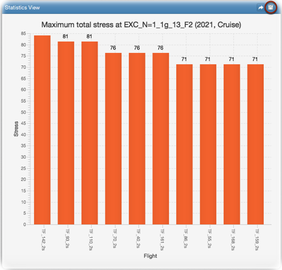

Select a 1g or incremental event to generate the statistics. You can search for the event by its name, load case number or conversion
table comment. For instance, selecting Maximum total stress statistic for the event Cruise(3)
will generate comparison of maximum total stresses of all typical flights for the cruise event.
Max. flights/events: Maximum number of results to be generated. This is the number of flights to compare when showing
statistics for multiple flight selections, or it is the maximum number of events to compare for single flight selection.
Results order: Order of results. For a flight comparison, Descending means the comparison will
include the top 10 (max. flights) flight values.
Show data labels: Select this if you want to see the data labels on the chart.
The generated statistics are displayed on a column chart as shown in the following figure. The chart plot can be saved to
disk by clicking Save view button (see figure).

Notes: (1) Statistic types Validity and Number of peaks are available only for multiple
flight selections (or entire spectrum selection).
(2) Generated statistics are based on event comparison for single flight selection. Whereas they are based on
flight comparison for multiple flight selections.
(3) Event names and comments may differ from spectrum to spectrum.